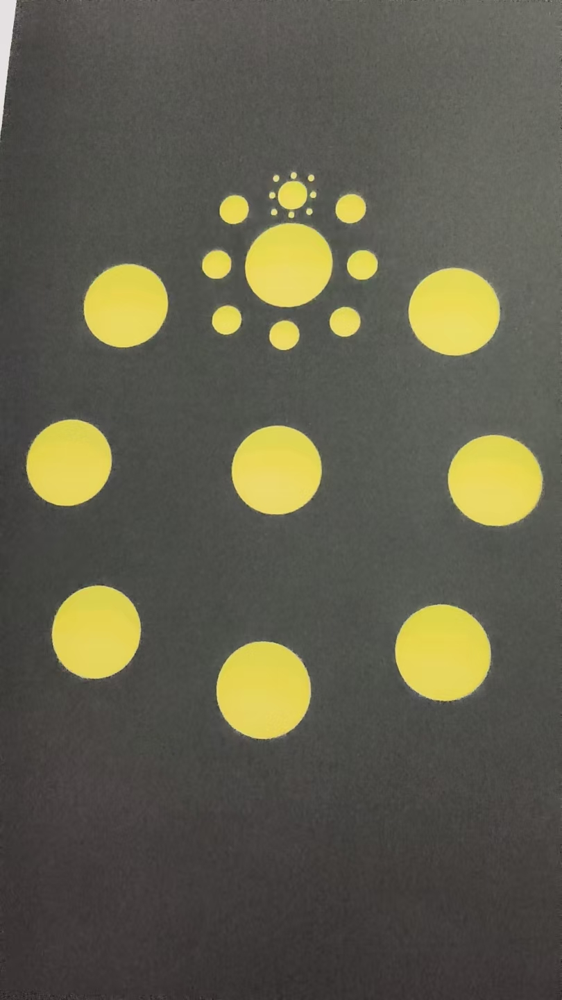
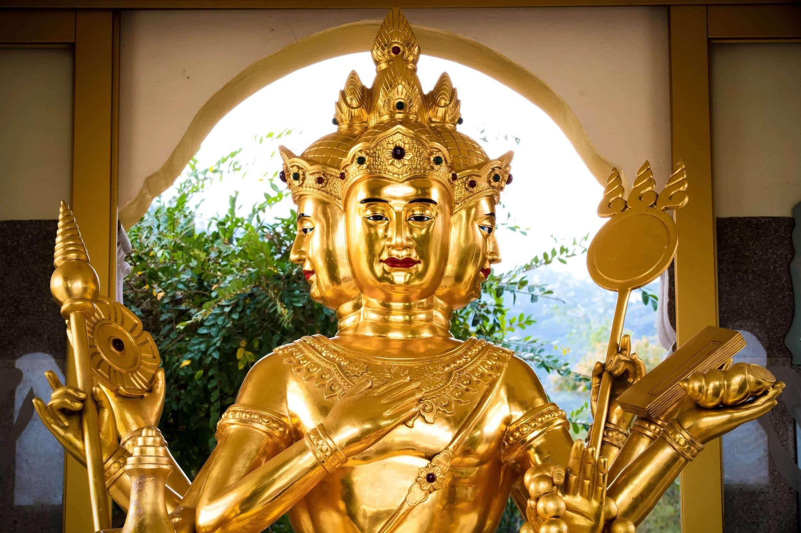
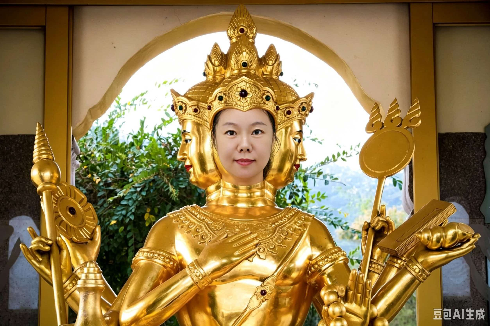
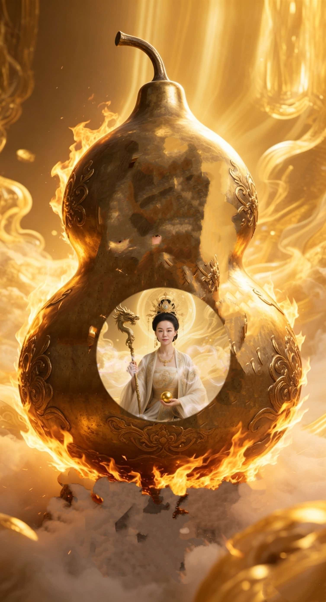
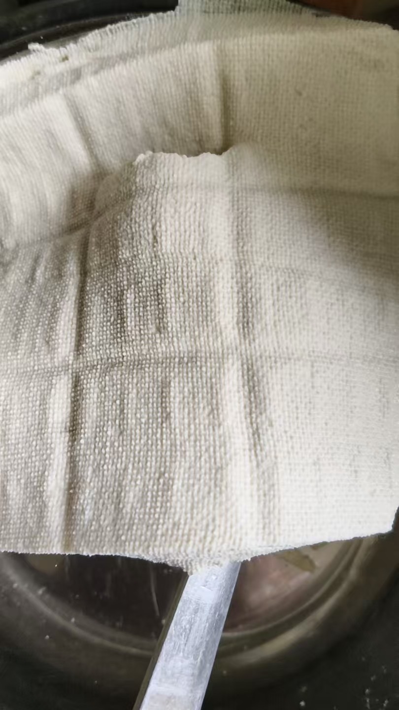
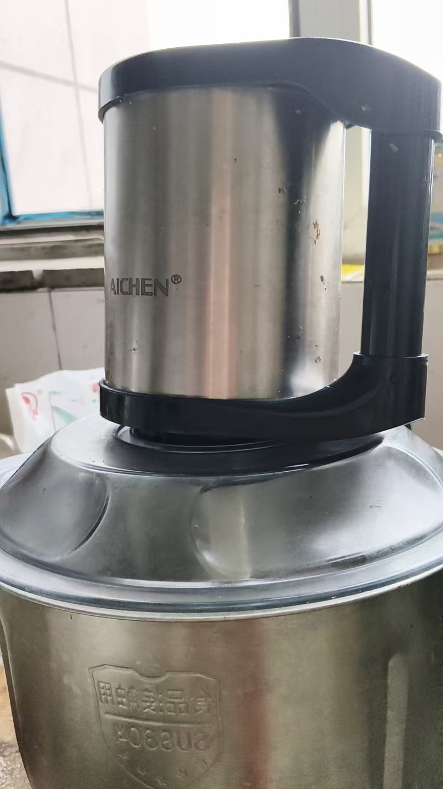
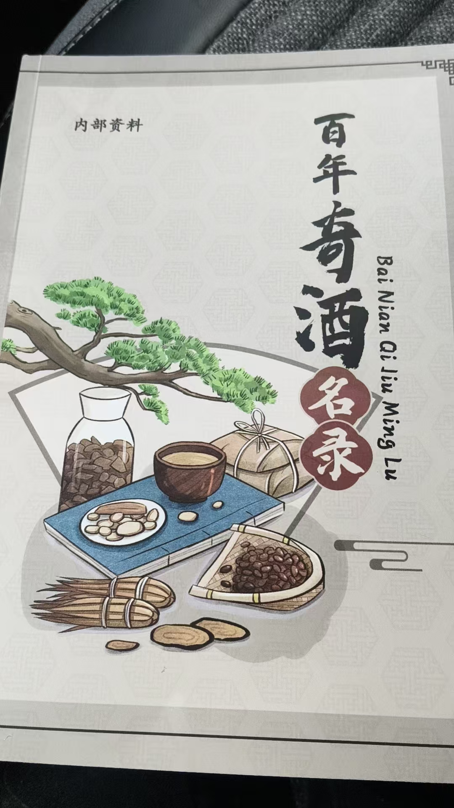
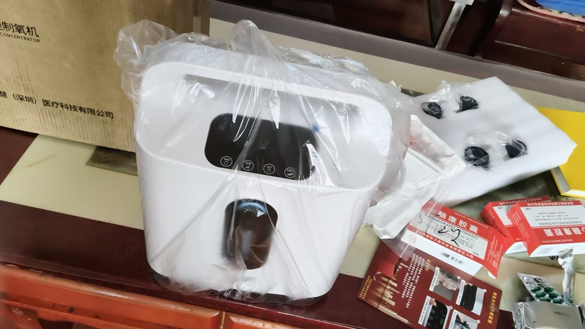
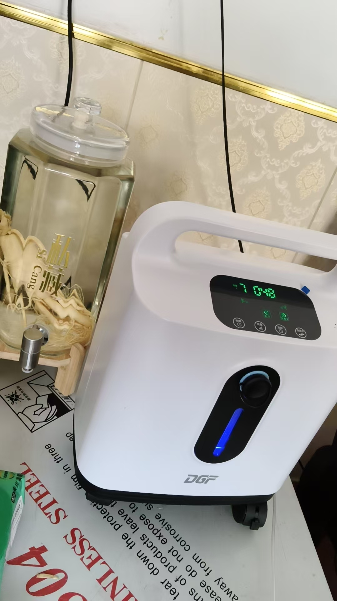

20260912马师姐反馈心得
修炼修行民间文化 原始对话记录
每一步，都是在多少年后证到了，才明白师父说的是真理。
一步步走过来，都证明师父是对的。
包括师父说南华寺肉身修金身的方法。
贵在参悟
包括你当初说“不收功”的原因
我也今晚才得以体悟。
体证大道
练功



知众生百苦，勤修不怠

一两半豆腐，也能做

绞馅机太好用，打的豆汁
只要有豆汁，加豆腐王就是豆腐脑
加盐卤就是豆腐
[呲牙][呲牙][呲牙]
好学之心
不是啥也会，是啥也想学

这节目啥意思，
送药酒书，还送了一盒六瓶熊胆粉
没明白什么用意
体验装[呲牙]
每天听不到一小时
药酒书也给了，也不用买他的药酒
这次感冒，口干喉咙疼，我给他们加了喉症丸
在嘴里含着
就是特别麻，特别苦
不过效果特别好
这次就是新冠变异菌
喉咙里会迅速起小疙瘩
财多招忌
原来周文强一百三十多亿啊
要那么多钱干啥
讲的是不错
已经上台，身不由己。
不赚不行
没想到，
[呲牙][呲牙]
被钱推到坑里了
我觉得别是问题的问题，钱多是主要问题
还好我没犯这个错误
[捂脸][捂脸][捂脸][捂脸]
打假网红判八年
也是这道理，
可以打假，不能借打假敛财
恩师，永远是对的
那时候就一直说，潜心修炼，别显摆
[呲牙][呲牙]把自己封在经里，
昨晚躺着，就去看身体每个细胞
感觉非常舒适
愉悦感
各种各种行业，都在大审查
不是不让干，
是避免暴雷
尤其是直播，
很多词就不能用
刚才想起了 斗地主
不管你地是怎么来的，地多就是问题
斗财主，不管你怎么起家，有场房，哪就是资本主义
尾巴
这光盘行动时代，勤俭持家，
手里有多少亿，不能流通，
那不行

疯狂购物
给父母买了制氧机
[呲牙][呲牙]
昨晚，继续买其他东西
心里想，这样买会不会花钱有点多
脑海里出了一句，尽管买，不会缺钱花的
今中午刚到家，买的三文鱼头，炖上
就来信了，新学生要组团过来
[强][强][强]
师父不差钱[呲牙]
缺钱我就找观音，有求必应

吸了半小时，也没有想象的那么好
想起来应该头脑更清晰
走一步，才明白一步
马师姐的反馈，开头几句就摆在那儿。
"每一步，都是在多少年后证到了，才明白师父说的是真理。"
"一步步走过来，都证明师父是对的。"
"包括师父说南华寺肉身修金身的方法。"
"贵在参悟。" 再往下，"包括你当初说'不收功'的原因，我也今晚才得以体悟"。
"体证大道。练功。"
就这几行。没有更多的说明。
这页后面是流水。一两半豆腐也能做，绞馅机打的豆汁，"只要有豆汁，加豆腐王就是豆腐脑，加盐卤就是豆腐"。她的注解是："好学之心。不是啥也会，是啥也想学。"
再一段谈钱。周文强一百三十多亿，"要那么多钱干啥"。判断很直："已经上台，身不由己。不赚不行"，"被钱推到坑里了"。还有打假网红判八年，"可以打假，不能借打假敛财"。恩师那句话，她记着："潜心修炼，别显摆。"
晚上躺着，去看身体每个细胞，说是"非常舒适，愉悦感"。
后面又跳到购物。给父母买了制氧机，继续买别的。心里想这么买会不会花多了，脑海里出一句："尽管买，不会缺钱花的。" 中午刚到家把三文鱼头炖上，就来信说新学生要组团过来。
站内《有财自来，只管修福修福》那页，说的是同一件事——只管修福，财自来。
反馈很短。证到的话，更长。